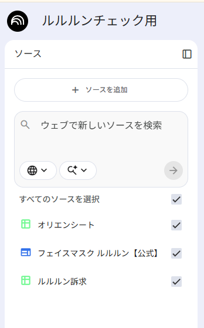
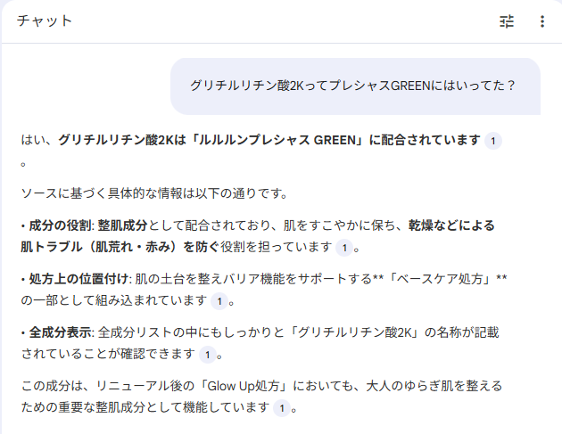
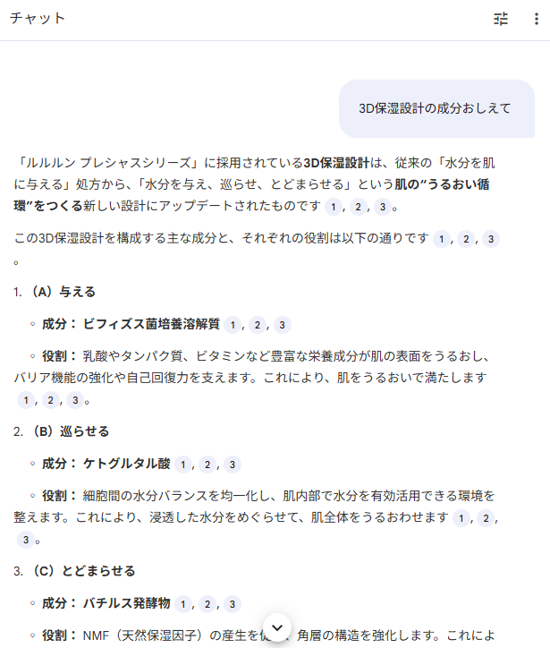
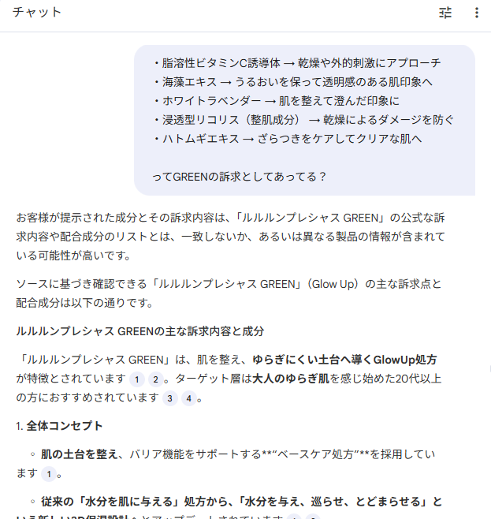

この事例のポイント
インフルエンサーのSNS投稿（動画テロップなど）に書かれた商品説明が正しいかどうかを、Google NotebookLM を使ってチェックしています。
「この成分、本当にこの商品に入ってたっけ？」「この訴求、公式の説明と合ってる？」――こうした確認を、手元のスマホやPCからサッと行えるようにした運用事例です。
NotebookLM とは？（かんたん解説）
NotebookLM は Google が提供する AI チャットツール です。普通のAI（ChatGPTなど）との一番の違いは、自分が登録したソース（資料）だけを根拠に回答してくれる という点です。
- 一般的なAI → インターネット上の膨大な情報を元に回答するため、間違った情報（ハルシネーション）が混ざることがある
- NotebookLM → 自分が登録した資料の中だけ から回答を生成するため、ソースが正確なら回答も正確
つまり、「ハルシネーション（AIの嘘）が起きにくい」 のが最大の特徴です。
なぜ NotebookLM を選んだのか
SNS投稿チェックでは「公式に正しい情報かどうか」が最も重要です。他のAIツールだと、ネット上の口コミやまとめサイトの情報を混ぜて回答してしまう恐れがあります。
NotebookLM なら、クライアントから配布されたオリエンシートと公式サイトだけをソースとして登録 できるので、回答の信頼性が高くなります。
使い方（ワークフロー）
ステップ1：ソースを登録する
NotebookLM に以下の資料だけを登録します。
- オリエンシート（クライアントから配られるSNS投稿時のマスト訴求が書かれた資料）
- 公式サイト（ルルルン公式の商品情報ページ）
- 訴求資料（ルルルンの訴求内容まとめ）

これ以外の情報は参照しないので、回答がブレません。
ステップ2：怪しいテロップをGoogleレンズでテキスト化
インフルエンサーの投稿動画を見ていて、「あれ、この説明合ってるかな？」と思ったテロップがあれば、Googleレンズ（OCR機能） でテキストをコピーします。スクリーンショットを撮ってGoogleレンズに読み込ませるだけなので、手入力の手間がありません。
ステップ3：NotebookLM のチャットに質問する
コピーしたテキストをNotebookLMのチャットに貼り付けて質問するだけです。たとえば：
- 「グリチルリチン酸2KってプレシャスGREENにはいってた？」
- 「3D保湿設計の成分おしえて」
- 「これってGREENの訴求としてあってる？」
NotebookLM はオリエンシートや公式サイトの情報だけを元に、正確な回答を返してくれます。
チャット例
以下はNotebookLMでの実際のやりとりの例です。
成分の確認： 「グリチルリチン酸2KってプレシャスGREENにはいってた？」と質問し、ソースに基づいた正確な回答が返っています。

製品コンセプトの確認： 「3D保湿設計の成分おしえて」と聞くと、公式資料をもとに構成成分を正確に教えてくれます。

訴求内容の照合： テロップで見かけた訴求表現が公式のものと合っているかを確認した例です。

成果
- インフルエンサーの投稿内容チェックがスピードアップ（資料を目視で探す手間がなくなった）
- ソースが限定されているため回答の信頼性が高く、ダブルチェックの工数も削減
- AI慣れしていないメンバーでも「チャットで質問するだけ」なので使いやすい
再利用可能ポイント
- 他の案件・他の商品でも同じ方法が使える → ソースを差し替えるだけでOK
- Googleレンズ + NotebookLM の組み合わせは、テロップ以外にもパッケージ表記やLP表現のチェックにも応用可能
- NotebookLM は無料で使えるため、導入コストゼロ
課題・改善点
- 動画内テロップのOCR精度が低い場合は手入力が必要なケースもある
- ソースの更新（オリエンシートの差し替え等）は手動で行う必要がある
- 現時点ではNotebookLMにAPI連携がないため、バッチ処理的な大量チェックには不向き